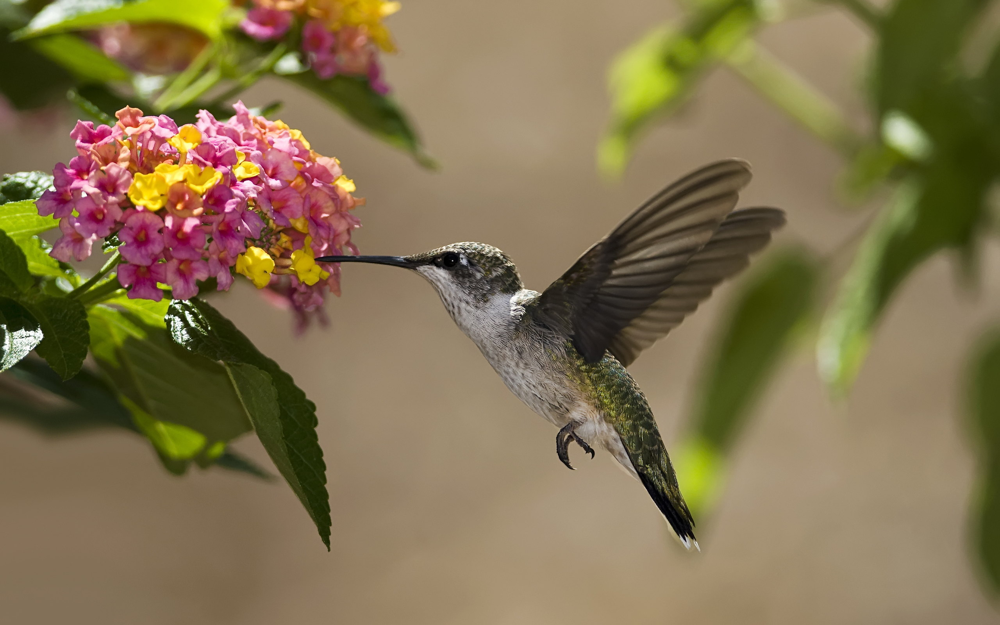
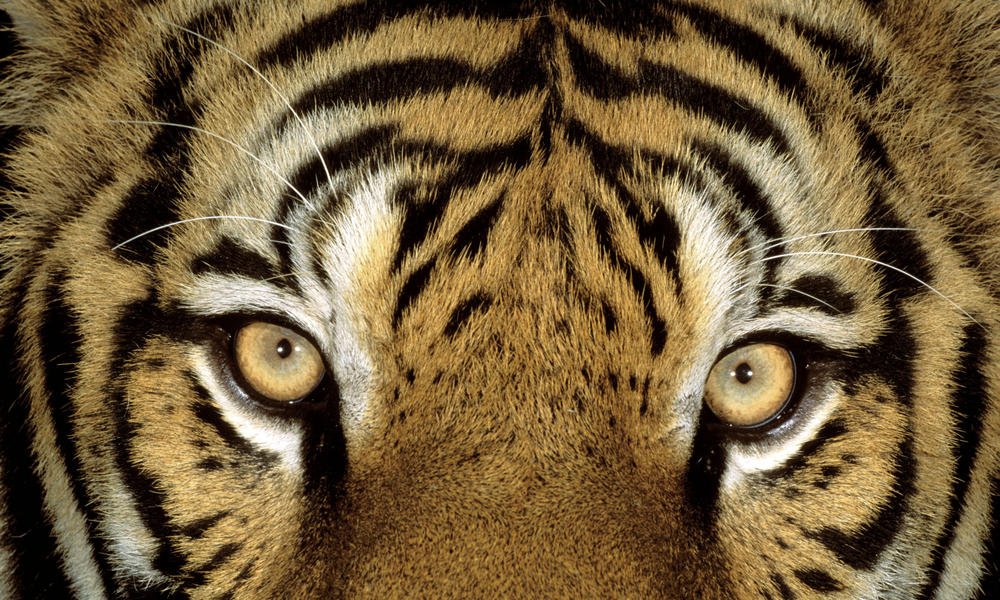

What is Big Year Competition?
by Wikipedia
A big year is an informal competition among birders to see who can identify by sight or sound the largest number of species of birds
within a single calendar year and within a specific geographical area. Popularized in North America, big years are commonly done within single US states and Canadian provinces, as well as within larger areas such as the entire world, the lower 48 continental U.S. states, or within the official American Birding Association Area. The ABA big year record of 772 species is jointly held by John Weigel of Australia and Olaf Danielson of the United States as part of ongoing 2016 efforts.
The world big year record of 6,149 species is held by Arjan Dwarshuis of the Netherlands, also as part of an ongoing 2016 effort
Furthermore,A big year is an informal competition among birders to see who can see or hear the largest number of species of birds within a specified time and within a specific geographical area.

Our own version of Big Year Competition
The Big Year app is a free adventure and entertainment app where people are enjoined to identify different species of animals as part of wildlife observation throughout the world’s geographical areas as a year-long competition. Users try to identify these animal species by taking a picture of them and posting it online through users’ online journal with their location and time of capture.
Each specie will be added to a user’s track record. And at the end of the year, those with the most sightings of species in a certain category, family or geographical area will receive awards and prizes from the company and the World Wildlife Fund organization.
This is the in-app competition wherein the user will compete to a ‘big year’ to identify as many animal species as he/she can in any geographical areas, any category and any species. The Big Year competition has many different categories and can vary on different geographical areas.
When is it?
The start of the competition will be at exactly 00:00 of January 1 and will end on the 23:59 of December 31 of the same year. Real prizes sponsored by the WWF will be given to the top Big Year players.
Who can participate and how do we sugn up for it?
The registration for this competition will start a month or two before January 1. Players will have to be at least 18 years old to participate.
Difference of our own version between the original version:
- WWF will monitor the points from captured species.
- For all species of an animal (earth, water, air).
- The app is free and because animals are everywhere, users can easily capture different species around them
- Instead of hunting/killing animals, take picture as a prof you have sighted the animal.